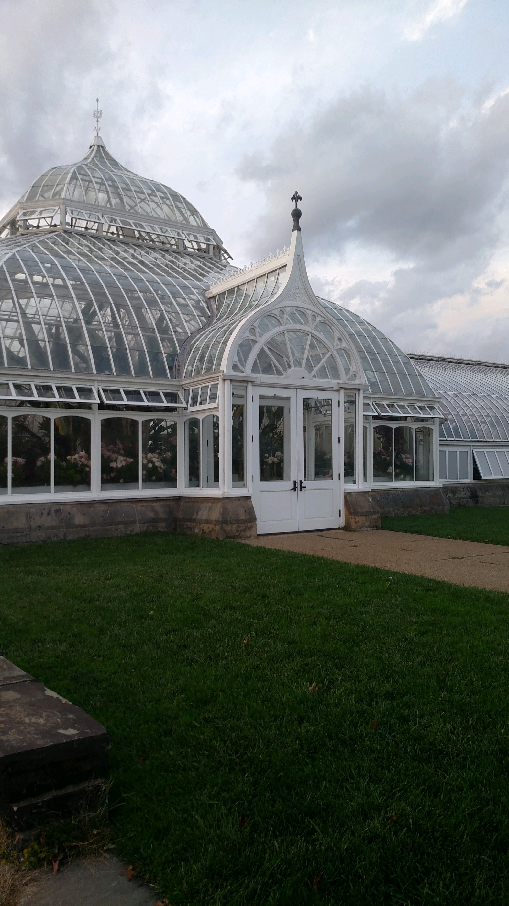

Phipps Conservatory
Residing in Schenely Park, this botanical garden was founded in 1893 by Henry Phipps. Phipps Conservatory houses fourteen rooms, each containing breathtaking gardens featuring exotic plants. Its indoor gardens boast rooms for palms, ferns, orchids, desert plants, and tropical plants.
